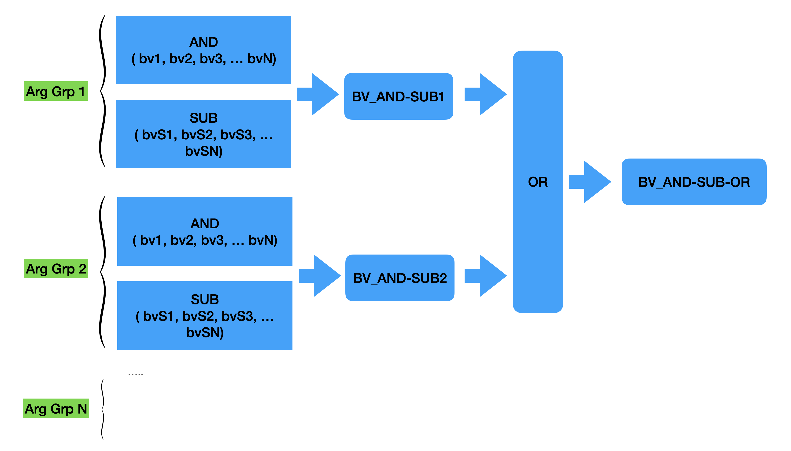
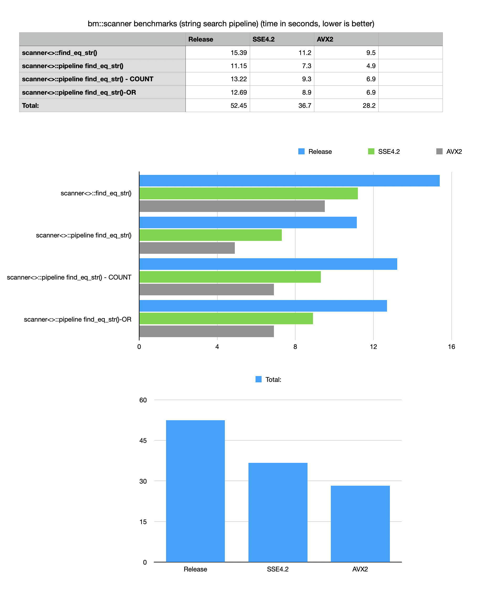

Version 7.7.7
Nov 12, 2021Release Notes
-
Fixed a bug in
bm::bvector<>::merge()- destructive OR operation, when arg vectors is empty and uninitialized function did not implement a correct logical OR (serious issue!) -
Implemented a new logic idiom
bvector<>::bit_or_and()asC := C OR (A AND B)Fused OR+AND is an often used idiom in query systems, implementations of SQL and operation on memory compressed structures. Fused implementation uses multiple optimizations and does not require a temporary vector, avoiding allocations and memory copy. New idiom is 2x times faster in synthetic tests of uncompressed bit-vectors.
-
bm::aggregator::pipelinenow implements a fast mode to run multiple AND-SUB queries with an optional aggregation of results via an OR function.Aggregator logical pipeline implements fast idioms used in BitMagic succinct vectors to implement sparse/dense vector search or query requests.
bm::aggregator::pipelineuses cache memory bandwidth and optimizations to implement series of AND-SUB as:(bv1 AND bv2 AND bv3…) AND NOT (bvS1 OR bvS2 OR … )with an optional final accumulation of multiple search requests using OR logical function.
Aggregator pipeline is used internally in BitMagic to implement succinct bit-sliced vector searches (
bm::scanner<>) 2-3 times faster. The speed achieved in 7.7.7 release demonstrates performance levels otherwise specific to systems using indexes. Fast index-free searches can significantly reduce both the systems footprint (RAM and disk) and complexity of implementation. -
Algebra of Sets tutorial (bvsetalgebra.cpp) example reworked to illustrate use of new fused OR_AND operations and aggregator pipeline (AND-SUB-OR). bvsetalgebra
Example implements a simple synthetic benchmark comparing
bm::scannersearch modes on unsorted, succinct string vector. New pipeline gives 3x improved performance, with extra improvements in optimized SIMD versions.
-
bm:scanner::pipelineimplements fast multiple string search in memory compressed string vector with an optional OR stage (under the hood usesbm::aggregator<>). Latest version makes a change in semantics to use compile-time options to configure pipeline, new options result in faster code due to compile-time specialization (C++-17 is very useful there).OR stage helps to implement a SQL idiom: Field1 IN (value1, value2… valueN) for cases where list of search values is in the tens of thousands or more or Field1 IN (SELECT FieldN FROM…) idiom using memory compressed index-free search.
New version adds important optimizations of the algorithms to automatically tune-up for a typical L2 cache size, but also adds a manual override (batch_size) to tune and tweak the system for a specific HW configuration and data distribution statistics. The auto-tune topic definitely deserves more optimization in the future.
New usage modes and benchmarks are available at: strsvsample07